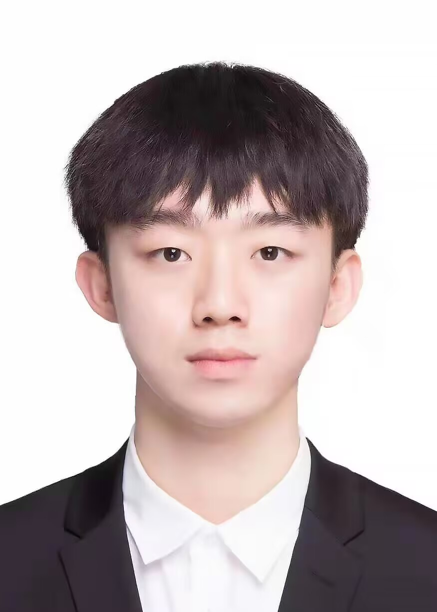

Biography



王祥玮，2002年生于吉林省。自幼6岁习琴，师从杨洪亮及东北师范大学音乐学院钢琴系主任娄雪玢教授，打下了坚实的古典钢琴演奏功底。他不仅在独奏领域屡获国际大奖，更兼具出色的室内乐、声乐艺术指导及爵士钢琴即兴能力。
2020年，他以优异成绩考入上海音乐学院，师从旅美钢琴家伉俪张小羽博士和著名钢琴家陈默也副教授。本科期间，他曾四次荣获上海音乐学院雅马哈亚洲奖学金，并受邀在上海交响乐团音乐厅、上音歌剧院等顶级场馆登台献演。
目前，他正就读于全球音乐学科QS排名第7的丹麦皇家音乐学院钢琴系攻读硕士学位，师从钢琴系主任、施坦威艺术家 Niklas Sivelöv 教授及捷克钢琴家 Bohumila Jedlickova 教授。其演奏足迹遍布中丹两国各大剧院与教堂，所在的钢琴三重奏 Trio Zora 亦多次入选丹麦“星期三音乐会”巡演。
古典钢琴独奏
室内乐合奏
声乐艺术指导
爵士钢琴即兴
视唱练耳/乐理/和声
钢琴教学法